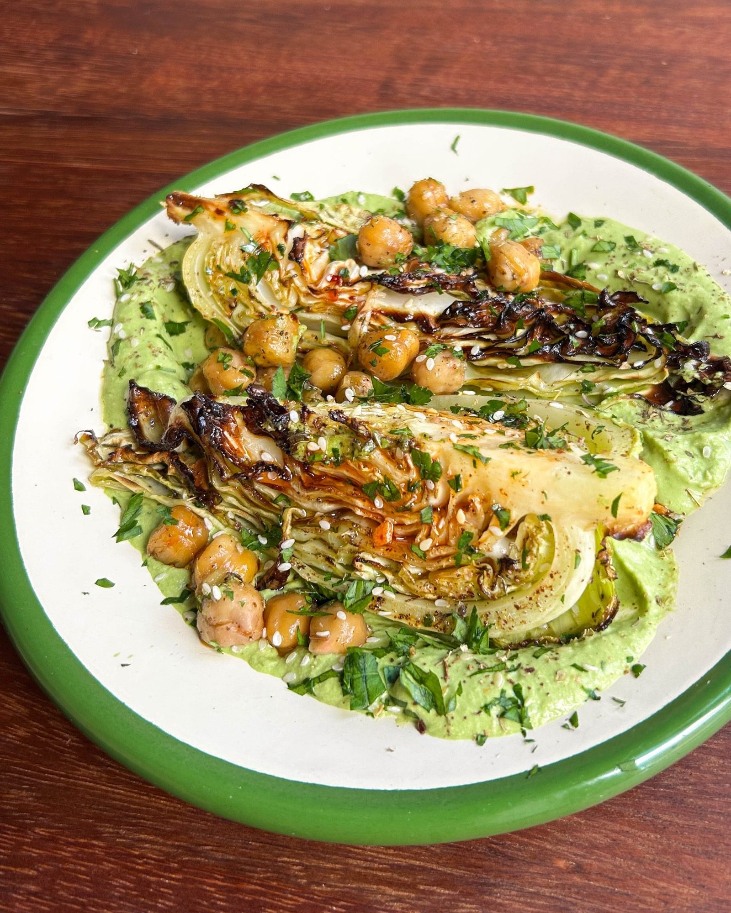

Roasted Aubergine, Hispi Cabbage + Za'atar Chickpeas with Spicy Aubergine Tahini
A tray of za'atar-roasted aubergine, charred hispi cabbage and crisp chickpeas, served under a blended aubergine and tahini sauce.

Before you start heat the oven to 200°C fan. The whole aubergine for the tahini roasts hotter, at 220°C fan, and takes 35-40 minutes, so start it first if you want everything ready together.
Ingredients
For the roasted aubergine
For the roasted hispi and chickpeas
For the spicy aubergine tahini
To serve
Method
To roast the aubergine
- Heat the oven to 200°C fan and line a roasting tray with baking parchment.
- Toss the 2 medium aubergines with the 3-4 tbsp olive oil, 1 tbsp za'atar and some salt and pepper.
- Spread the aubergine out on the lined tray and roast for 25-30 minutes, flipping halfway, until golden and soft.
To roast the hispi and chickpeas
- Toss the 1 hispi cabbage with 2 tbsp of the 3 tbsp olive oil, 1 tbsp of the 2 tbsp za'atar and some salt and pepper.
- Spread the cabbage wedges out on a separate roasting tray.
- Toss the 660g jar of chickpeas with the remaining olive oil, the remaining za'atar and the 1 tsp sumac, then season with salt and pepper.
- Spread the chickpeas out on the tray next to the cabbage wedges.
- Roast for 10-15 minutes, until the cabbage is crisp but still has some bite inside and the chickpeas are just crispy.
To make the spicy aubergine tahini
- Roast the 1 small aubergine whole at 220°C fan for 35-40 minutes, until properly soft and collapsed.
- Scoop out the flesh and blitz it smooth in a blender or food processor.
- Add the 100g tahini, 50g pickled green chillies, 2½ tbsp pickled chilli liquid, 1-2 tsp sea salt, 30g parsley, juice of ½ large lemon, 1 tsp ground cumin and 50ml olive oil.
- Blend until creamy, gradually adding 1-2 tbsp ice-cold water to loosen.
- Taste and adjust the seasoning with more salt or lemon.
To assemble
- Arrange the roasted aubergine, hispi cabbage and crispy chickpeas in an ovenproof serving dish.
- Return the dish to the oven for 5 minutes to bring everything together.
- Drizzle generously with the aubergine tahini.
- Finish with the chopped parsley, a sprinkle of sumac and sliced green chilli if you like heat, and serve warm.
Notes
The source roasts the whole aubergine for the tahini at 220°C fan while the rest of the dish goes in at 200°C fan. Either run it in the oven first and drop the temperature, or accept a slightly longer roast at 200°C fan.
Use milder chillies, or fewer, if you do not want much heat.
From Farmer J's cookbook The Farmer's Pantry.